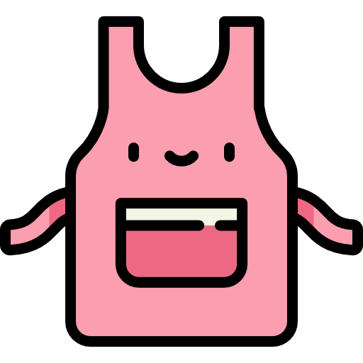

BOLINHA DE CHURROS

PREPARO
35 MIN
RENDIMENTO
8 PORÇÕES

FAVORITOS
1.420
COMENTÁRIOS
0
FATEC VOTORANTIM
Membro desde 2023

INGREDIENTES
MASSA
- 200 ml de água
- 1 colher (sopa) de manteiga
- 4 colheres (sopa) de açúcar
- 1 colher (chá) de canela em pó
- 1 xícara de farinha de trigo
EMPANAMENTO
- 1 colher (sopa) de canela
- 1/2 xícara de açúcar
RECHEIO
- 150g de doce de leite
MODO DE PREPARO
- Em uma panela, adicione a água, a manteiga, a canela e o açúcar
- Misture bem até o açúcar dissolver.
- Em seguida, adicione a farinha de trigo aos poucos
- Misture tudo com uma colher de pau até desgrudar da panela, se necessário, adicione água aos poucos para chegar no ponto.
- Retire da panela e sove até ficar uma massa homogênea.
- Faça bolinhas e, com o dedo, pressione fazendo um furo no meio.
- Frite submerso no óleo.
- Passe na mistura de açúcar e canela e coloque o recheio com ajuda de um saco de confeiteiro e um bico.